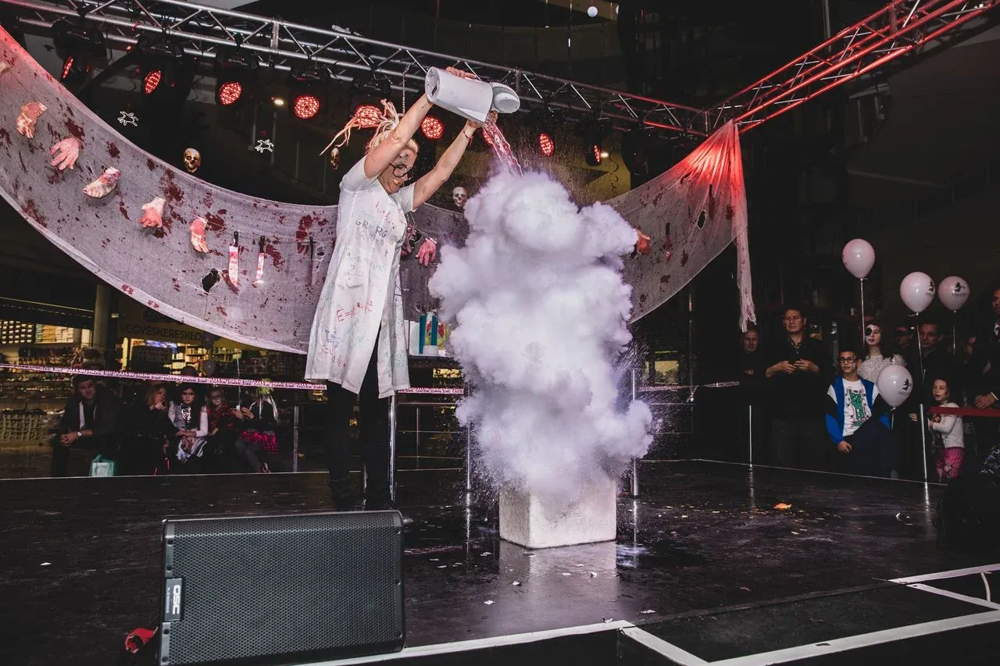
Rendezvényfotózás
Ott vagyunk, ahol történik
1200 főekkora rendezvényt is fotózunk, összehangolt csapattal
Fotóst kérekA koccintás, a díjátadó, egy őszinte ölelés
Több mint tíz éve fotózunk rendezvényeket. Tudjuk, hogyan kell megragadni egy este hangulatát, és kiemelni a fontos pillanatokat.
Minden pillanat
Egy profi fotós nem marad le a koccintásról, a díjátadóról vagy egy őszinte ölelésről sem. Minden fontos történésről minőségi kép készül.
Prémium minőség
Profi felszereléssel és utómunkával dolgozunk. A képek élesek, jól megvilágítottak, nyomtatott anyagba és online felületre is jók.
Történetet mesélünk
Nem csak dokumentálunk. A fotók visszaadják a rendezvény hangulatát, az örömöt és az izgalmat. Aki megnézi őket, szinte újra átéli az estét.
Ön az eseményre figyelhet
Mi gondoskodunk a fotókról, Ön és a vendégei felszabadultan élvezhetik a rendezvényt.
Egy kontaktlap a munkáinkból
Céges estétől a regattáig. Húzza, görgesse vagy lapozza a nyilakkal.
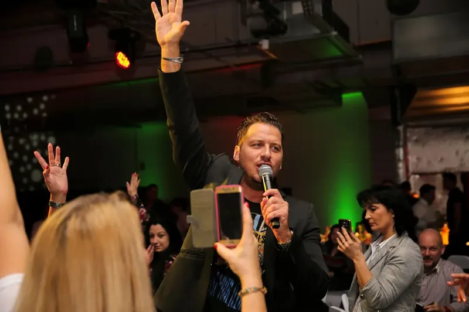
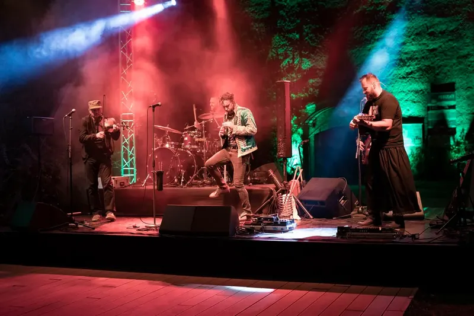
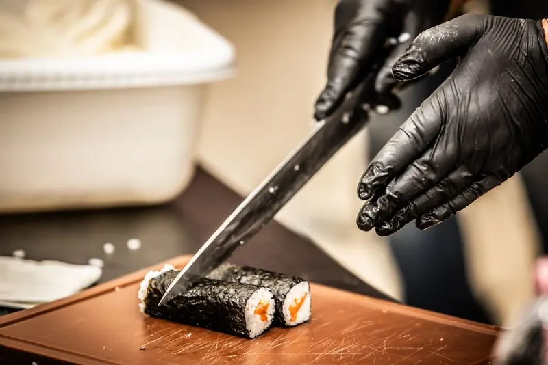
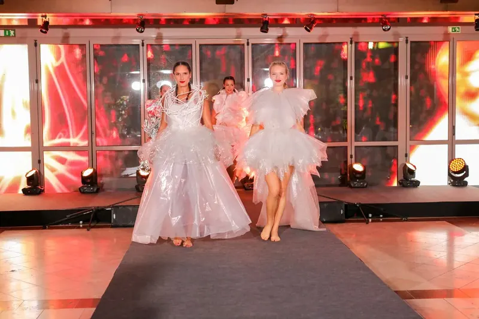
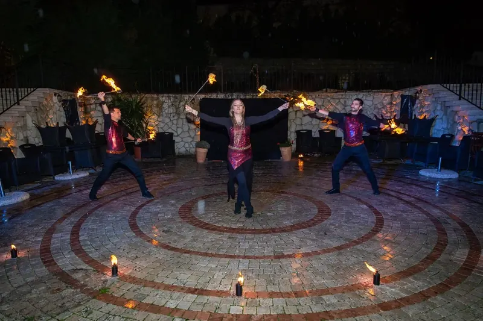
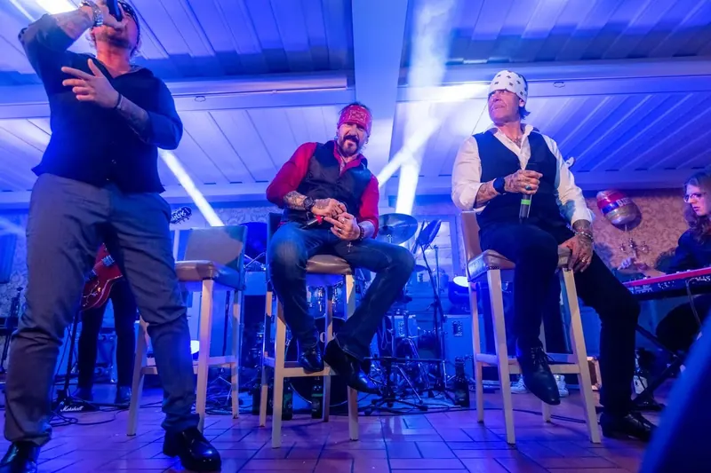
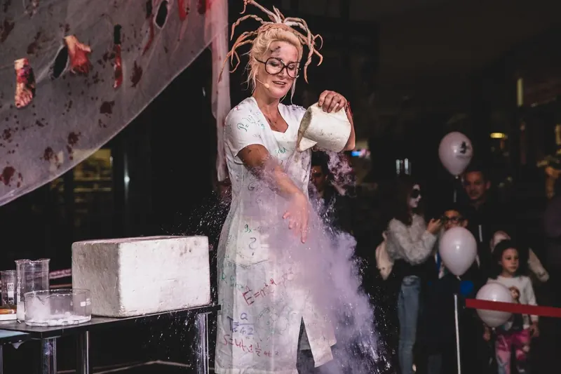
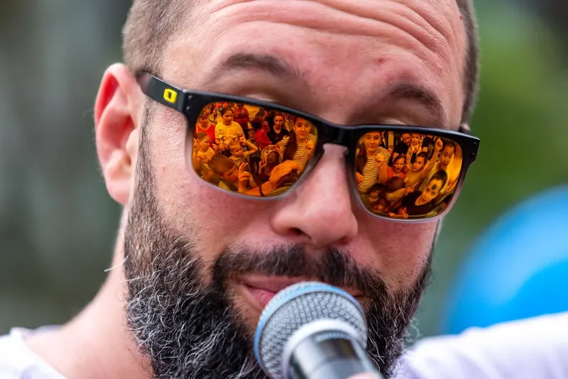
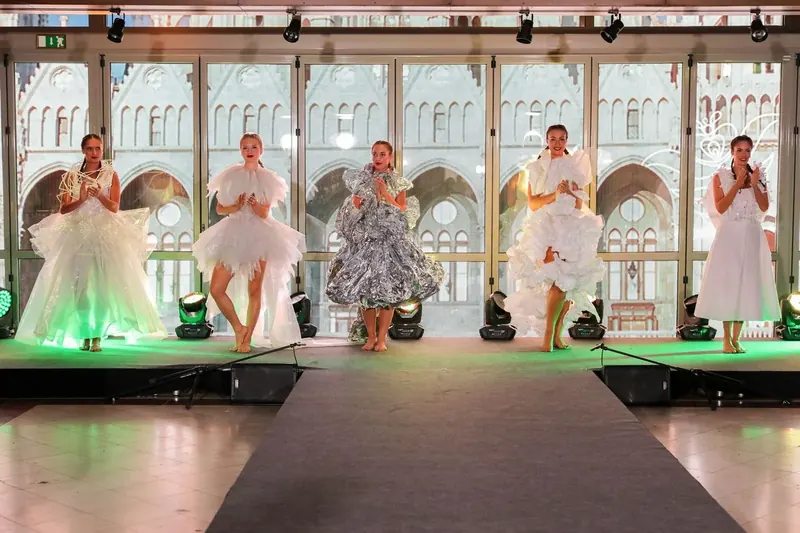
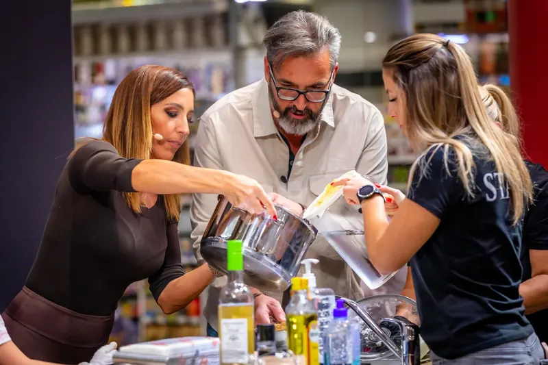
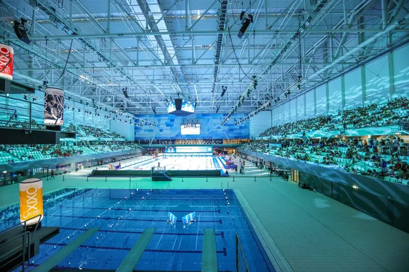
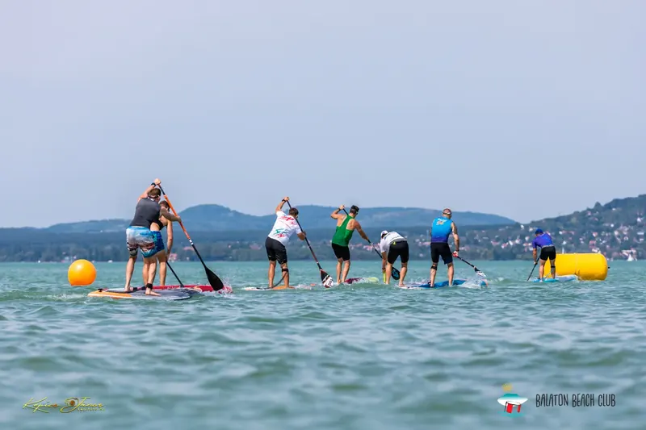
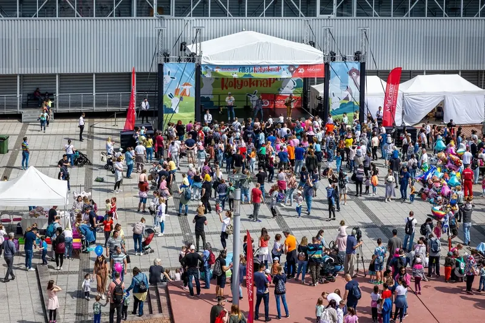
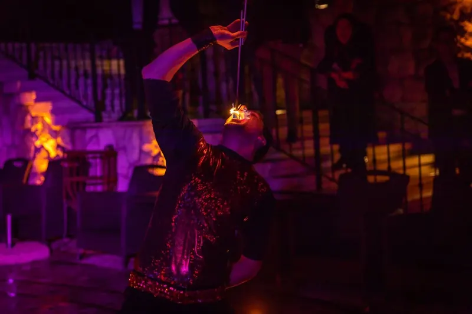
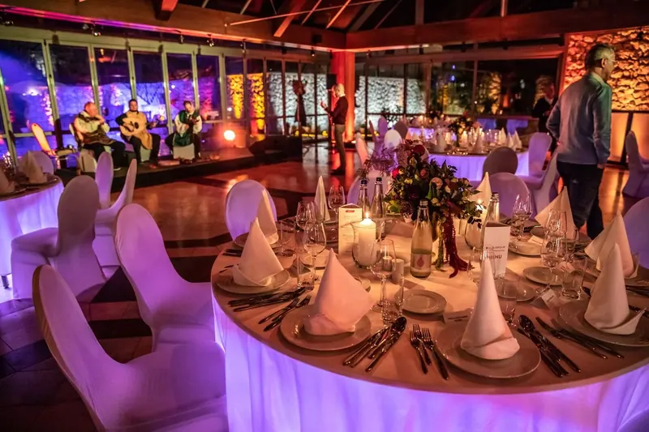
Észrevétlenül, mindig jó helyen
Diszkréten mozgunk a vendégek között, és mindig a megfelelő pillanatban vagyunk a legjobb helyen. Meghitt születésnapon és több száz fős konferencián is alkalmazkodunk az esemény jellegéhez. A képek a fotóalbumában és a digitális galériájában élnek tovább.